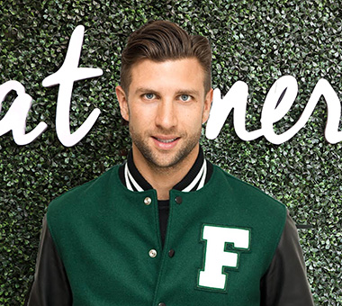
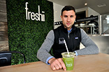
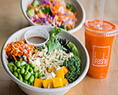

While working in New York City for fashion designer Oscar de la Renta, Matthew Corrin was inspired by “mom-and-pop” delis with fresh food but lackluster branding & service. He sought to “add magic to the fresh food business” & brand the commodity of fresh food not unlike Starbucks branded the coffee bean.
In 2005, he founded Freshii.
The Idea? To create a model that was scalable, branded & would improve the way people eat around the world.
Let's eat without regret. Let's love kale. Let's embrace quinoa. Let's try new things. Let's try unlikely combos. Let's eat things that are good. Let's eat things that make us feel good. Let's eat and sit. Let's be good to the Earth. Let's let the Earth be good to us. Let's Eat. Energize.
Matthew Corrin is the founder & CEO of Freshii. Matthew is a recipient of the Ernst & Young Entrepreneur of the Year award, Canada’s Top 40 under 40, Inc. Magazine’s Top 30 under 30, and Canadian Association of Foodservice Professionals Restaurateur of the Year.
Mission Green touches every part of our business: from packaging to waste, and marketing to store design. Everything you take from the store either biodegrades naturally to the earth or is easily recyclable. Shaking your meal in a biodegradable bag means we produce 5 to 7 times less of a carbon footprint than running even the most energy efficient dishwasher..
A menu with a mission! Purchase any We Feed menu item and Freshii will donate a meal to a child in need.
{kind=link}
{kind=link}
{kind=link}
{kind=link}